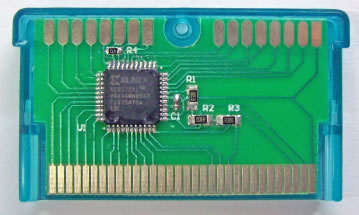

A weblog focused on interesting circuits, ideas, schematics and other information about microelectronics and microcontrollers.
E-books
Disclaimer
Because I have not tested all electronic circuits mentioned on this pages, I cannot attest to their accuracy; therefore, I do not provide a warranty of any kind and cannot be held responsible in any manner.
Parallax Propeller based laptop computer
24. February 2009 - 21:45 — adminI've really dilema if this amazing construction post under 6502 or under Parallaxis. So decide yourself: This is a Propeller laptop with a 6502 co-processor and 64K of static RAM!
How to use a stepper-motor from old disk drives
21. February 2009 - 13:51 — adminWhy and how to use components from old disk drives?
Introduction to 6502
19. February 2009 - 19:47 — admin6502 information is not as nostalgic as it seems to be...
Xiltendo
19. February 2009 - 19:43 — adminXiltendo CPLD Starter is an entry level CPLD device for the Nintendo Handhelds. It can be used for various applications with supplied hardware configurations, or it can be used as CPLD development board to create new hardware.

Xiltendo features:
* No programming cable needed – fully in-system reprogrammable
Another FORTH resources
18. February 2009 - 22:03 — adminI really love Forth... I've already said it, haven't I? ;)
MIDI expander with old ISA-BUS soundcard
15. February 2009 - 16:30 — adminAn interesting article about utilizing an old ISA soundcard as a MIDI expander.
USB Mass storage device on PIC
15. February 2009 - 16:25 — adminMicrochip's microcontroller applications can easily support USB Embedded Host functionality. One of the most common uses of this capability is to interface to mass storage devices, such as USB Flash Drives and memory card readers. These devices utilize the USB Mass Storage Class.
SD Card / FAT32 Interfacing with ATmega8
14. February 2009 - 15:50 — adminCC Dharmani shows how to easy connect a SD card to an ATMega 8 microcontroller.
C64 USB keyboard
11. February 2009 - 14:21 — adminHow to connect an old C64 keyboard to the PC via USB - just for curiosity and skills.